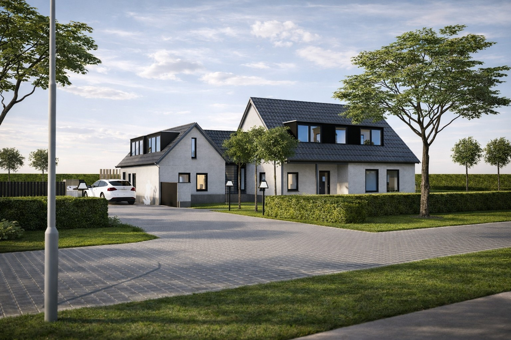

Het Warenhuis
Restaurant · Den Bosch
Interieur visualisaties die routing en sfeer in één beeld vangen.
Portfolio
Interieur ontwerp, exterieur ontwerp, visualisaties en haalbaarheidsstudie. Selecteer een filter om sneller relevante voorbeelden te zien.
Tip: filters zijn optioneel. Als je scrolt zie je het geheel.
Restaurant · Den Bosch
Interieur visualisaties die routing en sfeer in één beeld vangen.

Cateraar · Oosterhout
Een functionele indeling die ook het merkgevoel ondersteunt.

Restaurant · Hilvarenbeek
Premium sfeer, strak uitgewerkt in materialen en details.

Restaurant · Hilvarenbeek
Renovatie met behoud van karakter, zonder ouderwets te worden.

Restaurant · Vught
Haalbaarheid en flow: gastbeleving én operatie moeten kloppen.

Grondverzet & sloop · Helvoirt
Exterieur ontwerp met focus op functie, logistiek en uitstraling.

Boerderij · Nederland
Exterieur & interieur als één samenhangend ontwerpverhaal.

Gastenverblijf + woningupgrade · Nederland
Upgrade met duidelijke keuzes in comfort, licht en indeling.
Wil je weten wat er in jouw project mogelijk is? Stuur je vraag. We reageren binnen 1–2 werkdagen.
Plan intake